The feel
Cyberdelic comes from the late 1980s and early 1990s, when early virtual reality and the internet were combining with house music, neo-psychedelia and cyberpunk fiction.1 Many of the people who built early cyberculture had taken psychedelics, and as psychedelic users became its programmers, it came to be known as a "cyberdelic" movement.2
The pictures promise a trip. A flyer splashed with sci-fi imagery told you that the rave would take your mind and blast it into outer space.3 Colour runs loud: garish palettes and intense, vivid patterns were an easy visual reference to tripping, and club imagery mimics the recurring geometric patterns in highly saturated colours that the psychologist Heinrich Klüver recorded from people on hallucinogens in 1926.4 The mood is hopeful. Terence McKenna, who had a hit single with The Shamen, called rave "the cutting edge of the last best hope for suffering humanity".5
- full-spectrum
- hypnotic
- optimistic
- dense
- all-night
- home-computer cosmic
Where it comes from
The psychedelic magazine High Frontiers, launched in 1984, became Reality Hackers in 1988 and reached newsstands as Mondo 2000 in 1989, made in the Berkeley hills and melding computers, psychedelic drugs, sex and art.6 In London, Gregory Sams opened the Strange Attractions fractal shop in 1990.1 In Britain's rave scene, Fantazia's flyers had turned retro-futuristic by the summer of 1992,7 and the airbrush artist Junior Tomlin painted sci-fi flyers for promoters such as Dreamscape and Telepathy.3 The Shamen set a Terence McKenna monologue to electronic music in 1992, and the single Re: Evolution reached number 18 in the UK.1 Jeff Minter, maker of a long series of light synthesisers, brought his psychedelic games to the Atari Jaguar with Tempest 2000 in early 1994.8
Core elements
Fractals and plasma
Fractals were cyberculture's answer to the tie-dye and paisley prints of the 1960s.1 Fractint, a fractal program for PCs, drew Mandelbrot sets, Julia sets and plasma clouds, which its manual said must be watched with the palette animating.9 Douglas Rushkoff wrote that ravers were inspired by the holograms and fractals on their computers.2
Colour cycling
Colour is animated rather than fixed. Fractint's colour-cycling mode rotated the 256 colours of a VGA card's palette through the finished picture, with keys to reverse the direction and change the speed.9 Rave graphics ran on retina-burning neon and intense, vividly coloured patterns.4
Sci-fi imagery
Flyers were splashed with sci-fi imagery: alien cops and cyborg women against imaginary landscapes.3 In 1993 TIME described the look of this scene, which it called cyberpunk, as science-fiction surrealism tweaked by computer graphics.10 Mondo 2000's third issue put Deborah Harry on the cover against a photograph of deep-space nebulae.6
Rave flyer layout
A flyer had to tell people the where, when and how of the party.4 Designers loaded it with dazzling fractals, wrapped copy around spheres and fought to fit in a huge amount of text,11 set in brash, bold type large enough to read in a chemical daze.4
Technology mixed with mysticism
Technology and the spirit sit side by side. Reality Hackers ran articles on virtual reality next to high-tech paganism,6 and Terence McKenna, called the Timothy Leary of the 1990s, put his ideas on a record with The Shamen.1 In San Francisco, raves were modelled on Ken Kesey's Acid Tests, with music, lighting and ambience tuned to bring on altered states.2
Density and collage
Rave graphics set a trend for hyper density, overlays and bold patterns, with imagery cut and pasted together like the samples in the music.4 Mondo 2000's art director Bart Nagel filled it with eye-scorching graphics and made one cover from a background lifted off another magazine, and the Village Voice called the magazine completely unreadable.6
How to do it
Render and colour-cycle a fractal
For each pixel, iterate z = z² + c and colour the pixel by how many iterations it took to escape.9 Start with a limit of about 150 iterations, the default in a popular 1989 PC fractal program, and raise or lower it to taste.9 For smooth gradients instead of bands, use the smooth iteration count: Quilez's version escapes at a radius of 256 and runs up to 200 iterations.12 Then leave the picture alone and animate only the palette, rotating its colours through the finished image.9
Zoom into the set's border
Explore the border of the Mandelbrot set, where the colours change fastest; the solid inside is the slowest part to draw, because every point there runs to the iteration limit.9 The same border points give the most interesting Julia sets, so flip to the Julia set wherever the Mandelbrot set looks good.9
Build a cosine palette
Inigo Quilez's palette, colour(t) = a + b * cos(2π(c * t + d)), builds a whole colour ramp from four RGB vectors, and he suggests it for colouring greyscale signals such as fractals.13 For a palette that repeats exactly over 0 to 1, make c a whole number of halves: 0.5, 1.0, 1.5 and so on.13
Airbrush or collage the flyer art
Junior Tomlin airbrushed his flyers, a technique he mastered with the science-fiction artists Chris Foss and Jim Burns as his inspiration.3 On a computer, load the design with dazzling fractals and wrap the copy around spheres, while still fitting in everything the flyer has to say.11 Collage in glossy orbs and generated textures, the kind 1990s filter plug-ins were made for.14
Carry your own art into the game
Cruelty Squad's vibrant, almost overwhelming look is, in its creator's words, a direct continuation of his work outside games.15 Ville Kallio started from an FPS tutorial and aimed only for a simple Quake-style shooter.15
Sync the visuals to the music
Jeff Minter's light synthesisers grew from his feeling that there had to be a better way of interpreting music visually than disco lights.8 His Virtual Light Machine, built into the Atari Jaguar CD in 1995, played an audio CD and generated real-time animation more or less in sync with it, from 81 presets.16 For Rez, Tetsuya Mizuguchi told the composers not to decorate the music and judged each note on whether it worked visually.17
Keep flashes under the seizure limits
Flashing lights and patterns can cause seizures in about 1 in 4,000 people.18 Xbox's guideline fails flashes faster than about three a second that cover 20 per cent or more of the screen, counts saturated red as a flash at a smaller change in brightness, and also fails high-contrast stripes over 20 per cent of the screen; lower the contrast or shrink the pattern.18 A 1989 fractal program's manual already warned that cycling the colours too fast causes flicker.9
Cheat sheet
Do
- Put the game first, then make it psychedelic. Minter's philosophy: "Gameplay Uber Alles. And if you can make it psychedelic too, great!"8
- Zoom into the border of the set, where the colours change fastest.9
- Tell people where, when and how, in type big enough to read in a chemical daze.4
- Let the music drive the picture, as the Virtual Light Machine did,16 and cut any sound that is only there as decoration.17
Avoid
- Copying reality. Minter's advice is to use the machine to go to places no one has imagined, not to emulate reality.8
- Too few colours. A 1989 fractal program's manual put it plainly: "Plasma clouds in 16 colors just don't make it."9
- Text nobody can read. The Village Voice called Mondo 2000 an art director's nightmare and completely unreadable.6
- Fast flashing across a large part of the screen, saturated red flashes and big high-contrast stripes, all of which can trigger seizures.18
Tools and tutorials
- Inigo Quilez: Palettes
The cosine palette: looping colour ramps from four vectors.13
- The Book of Shaders
Noise, patterns and colour in fragment shaders, from scratch.
- XaoS
Real-time fractal zooming with colour cycling, good for reference and capture.
- Ultra Fractal
Layered fractal art with gradient editing. The Mandelbrot spiral in the gallery was made with it.
Palette
Sampled from the Fantazia flyers, Boss Drum, Cruelty Squad, Tempest 2000 and Kai's Power Tools. The fractal behind this page cycles through the same colours. Press P to change its palette, C to stop the cycling.
Feel the vibe
In motion
Listen
Terence McKenna's monologue over The Shamen's electronics. It is on Boss Drum, and the single reached number 18 in the UK.5
YouTubeBright and hypnotic. Try timing a palette cycle to its loops.
YouTubeThe track for Tempest 2000's first area, with a sample that misquotes a line from Videodrome.19
YouTubeVille Kallio made the music himself, in LMMS.15
YouTube
More references
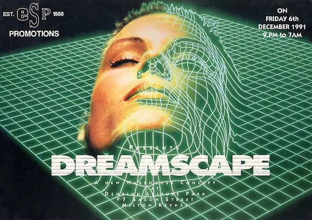
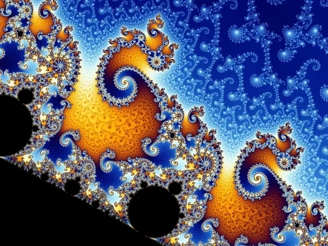
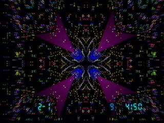
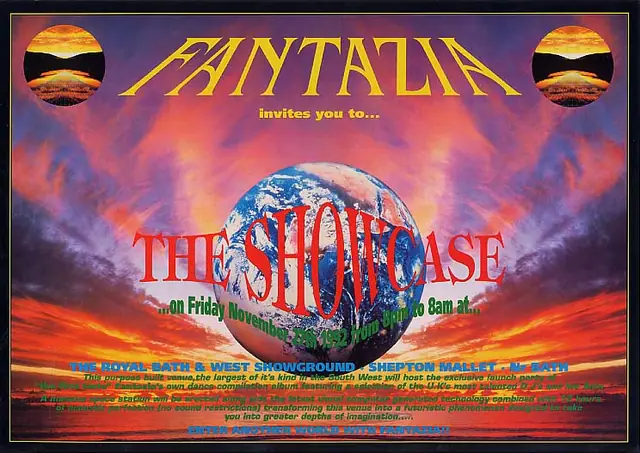
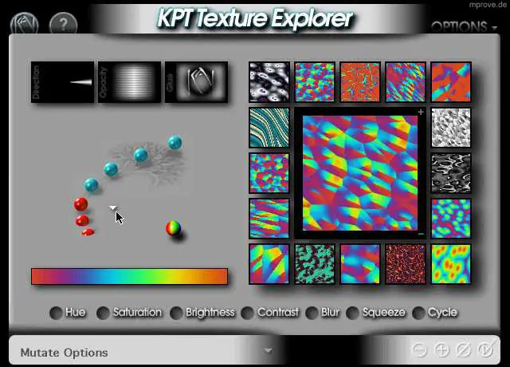
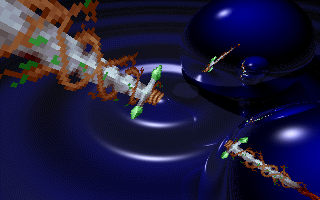
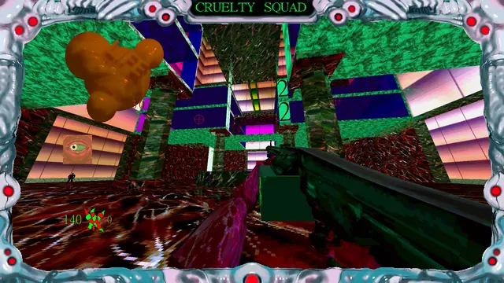
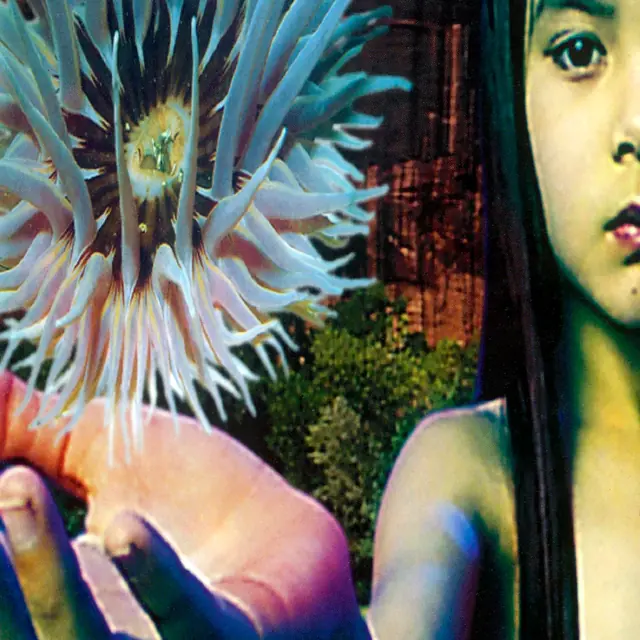
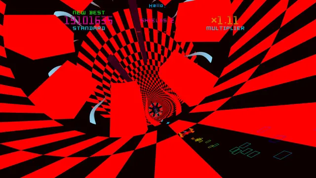
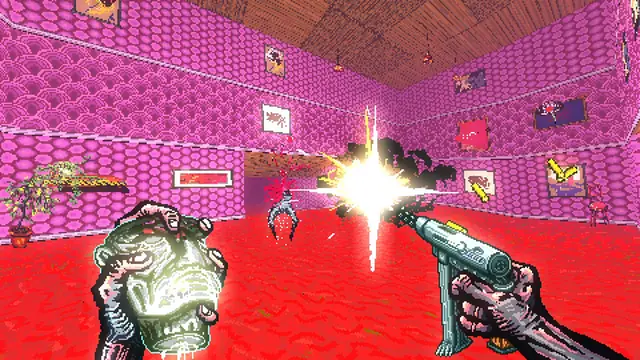
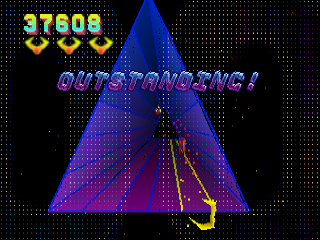
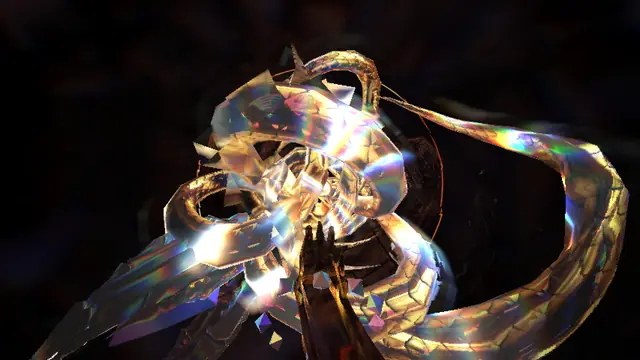
Games
- Tempest 2000
Minter's psychedelic update of Tempest, with a thumping techno soundtrack.19 Study the particles, rainbow type and warp tunnels.
- Rez
Dreamed up at Zurich's Street Parade and code-named Project-K, for Kandinsky.17 Study how shots and sounds line up.
- Polybius
Study how the tunnel's colours shift at high speed.
- Post Void
Study how its hot pink and orange rooms keep moving.
- Cruelty Squad
Made by one developer in Godot, with levels in TrenchBroom, models in Blender and textures drawn in Krita and Affinity Photo.15 Study the clashing textures and the fleshy frame.
- HYPER DEMON
Study the iridescent shapes that bloom out of the dark around you.
Film, art and more
- Fantazia flyers
By the summer of 1992 Fantazia's flyers had turned retro-futuristic, putting the brand ahead of the line-up.7 Study the planets over a laser grid and the face rising from the horizon.
- Boss Drum
The Shamen album that includes McKenna's Re: Evolution.5 Study the cover's kanji drum in a tunnel of green code.
- Mondo 2000
The Berkeley magazine that melded computers, psychedelic drugs, sex and art.6
- Second Reality
Study how one effect flows into the next, in time with the music.
- Virtual Light Machine
Built into the Atari Jaguar CD, it turned any audio CD into real-time animation, with 81 presets.16
- Kai's Power Tools
Kai Krause's Photoshop plug-ins, from Spheroid Designer's orbs to Texture Explorer.14
- The Mind's Eye
Study how the computer animation is cut to the music.
- Lifeforms
Study the cover: a colour-shifted photo collage of a sea anemone, plants and a face.
Sources
- 1Cyberculture: The Beginning of the Modern World (exhibition catalogue)
- 2E-Prescription for Cultural Renaissance
- 3Afrofuturism & Rave Art: Junior Tomlin In Conversation
- 4What Rave Culture Is Teaching Modern Graphic Designers
- 5Terence McKenna’s Alien Dreamtime
- 6A History of Mondo 2000 Part 1
- 7Let us be your fantasy: How Fantazia brought UK rave to the masses
- 8Jeff Minter
- 9FRACTINT (Version 7.0) documentation
- 10Cyberpunk!
- 11Rave Flyers: Wanna put the "real" fun back in collecting?
- 12Smooth iteration count for generalized Mandelbrot sets
- 13Palettes
- 14The Interface of Kai Krause’s Software
- 15Examining the amoral world of big business in Cruelty Squad
- 16Hacking Jeff Minter's Virtual Light Machine: Unpacking the code and community behind an early software-based music visualizer
- 17Rez: Infinite: How a techno street parade inspired Tetsuya Mizuguchi’s pioneering music video game
- 18Xbox Accessibility Guideline 118: Photosensitivity
- 19Tempest 2000 Was The Rare Jag Game Worth Crankin’ The Volume For